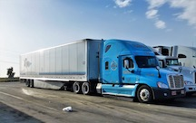

AquaClarity strives to ensure a smooth and transparent delivery and return process for all customers. We offer worldwide shipping for most of our products, with varying delivery times based on location and product size. Orders are typically processed within 2-3 business days, and customers receive tracking information once their products have shipped. For larger or specialized products, such as marine equipment, delivery times may vary, and AquaClarity works closely with logistics partners to ensure safe and timely arrivals.
If a product needs to be returned, AquaClarity offers a 30-day return window from the date of receipt for unused and unopened items. Customers are responsible for return shipping costs unless the product is damaged or defective. Refunds or exchanges will be processed once the returned item is inspected. For any questions or issues, AquaClarity’s customer support team is available to assist promptly.